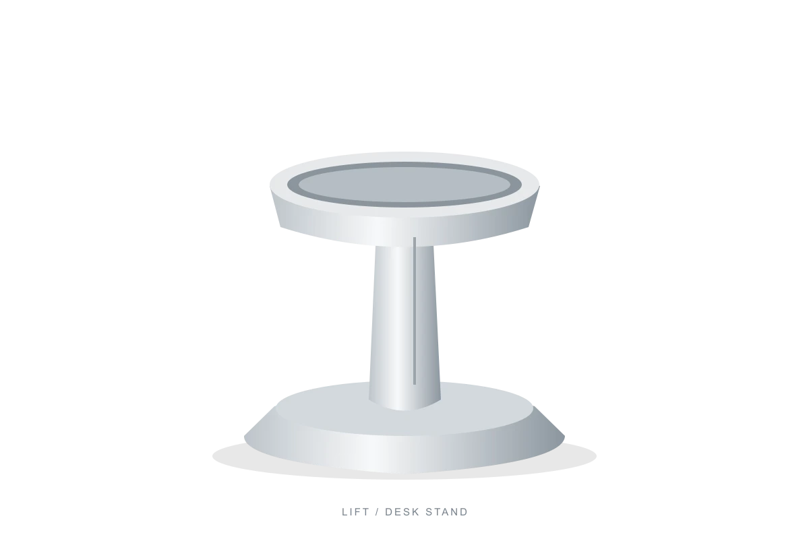
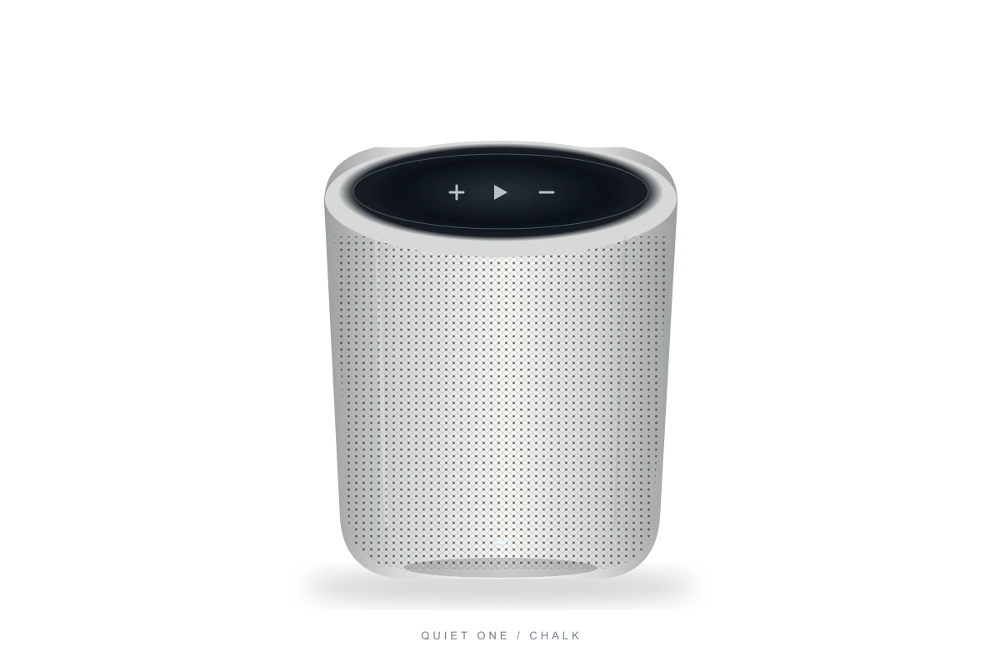
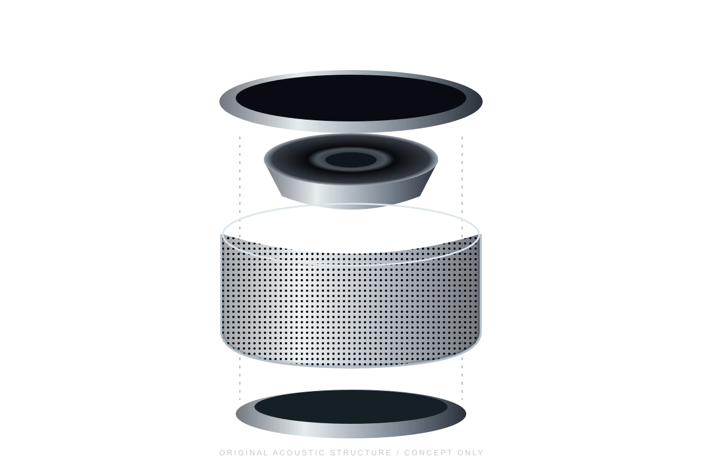
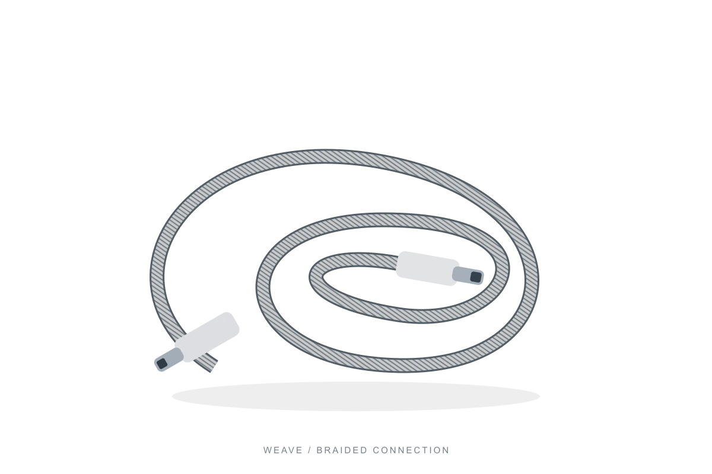

轻型底座
让声音稍稍离开桌面。
A LITTLE MORE ROOM FOR SOUND.
小巧的形体，宽阔的声场。
探索声音
粉笔白 · 为你的空间留白

一枚低频单元与环绕导音结构，在桌面上展开声音。这里展示的是原创产品概念，不是实测音质或认证参数。

让声音稍稍离开桌面。

把细节也整理得恰到好处。
听音乐、听故事，或者只听一场雨。
原创虚构产品 · 本地演示，无购买或声学性能承诺。